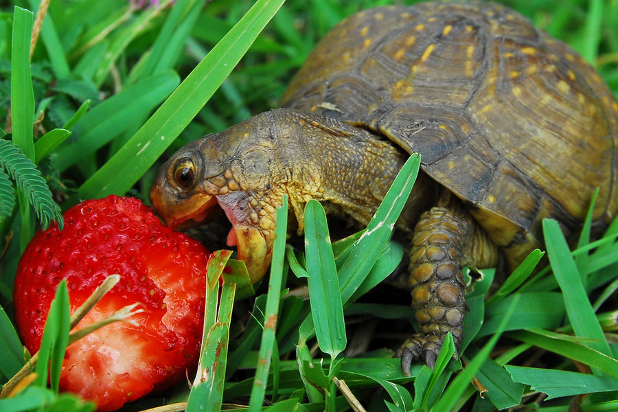
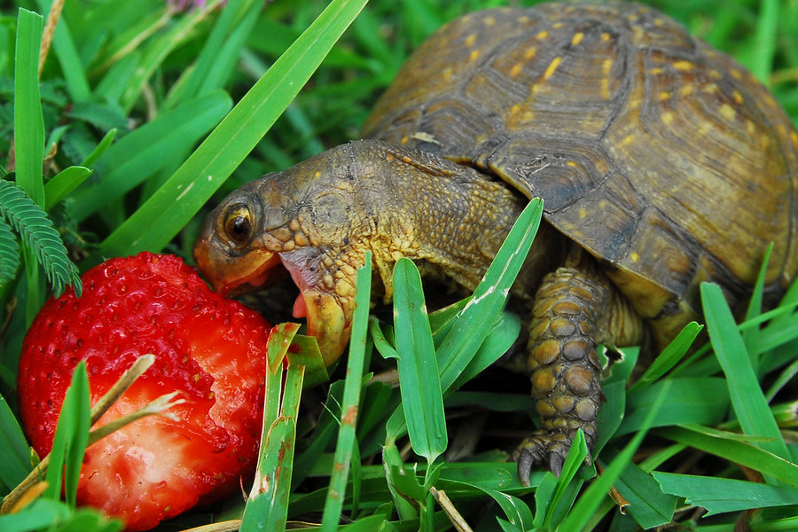
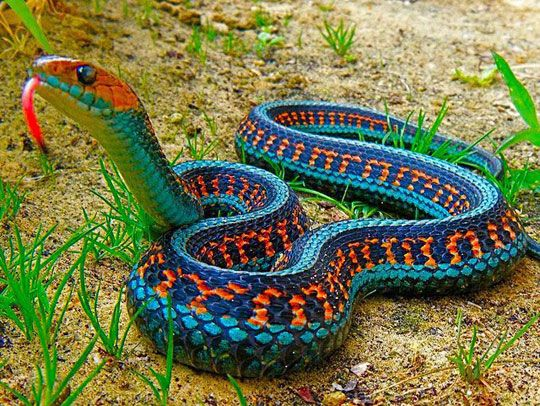
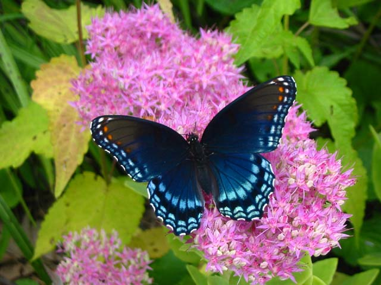
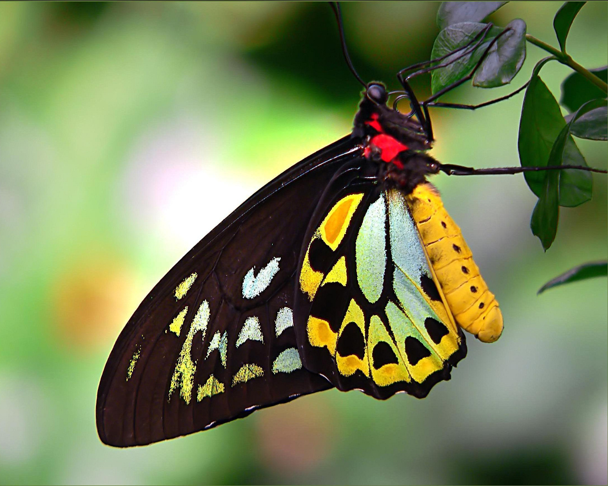
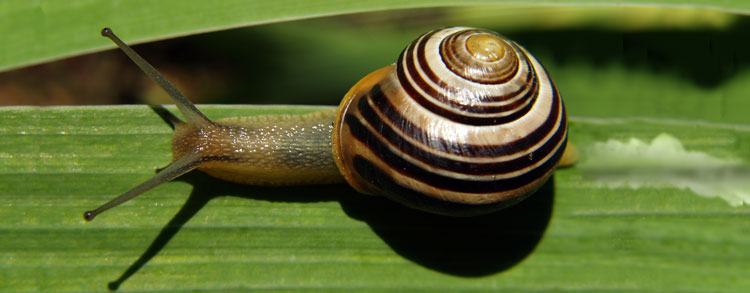
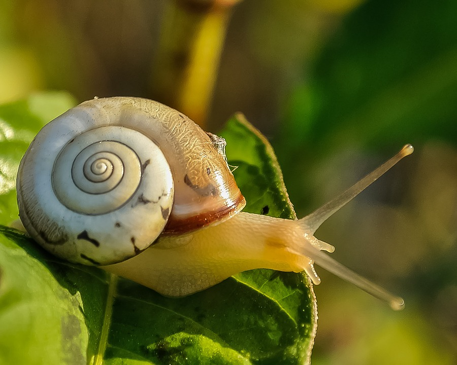

Which animal do you choose to learn about?
The Turtles
 

Turtles are reptiles with hard shells that protect them from predators. They are among the oldest and most primitive groups of reptiles, having evolved millions of years ago. Turtles live all over the world in almost every type of climate.
Snakes

Snakes (suborder Serpentes) are elongated, limbless, flexible reptiles. There are about 2,900 species of snakes. Of these, 375 are venomous.
Insects
Butterflies
 They taste with their feet and have a suction tube for a mouth. Their eyes are made of 6,000 lenses and can see ultraviolet light. They drink from mud puddles and transform from caterpillars to fluttering adults. These fascinating magicians are butterflies! There are about 165,000 known species, found on every continent except Antarctica, and they come in a wide variety of colors and sizes. The largest species may reach 12 inches (30 centimeters) across, while the smallest may be only 0.12 inches (0.3 centimeters).
Snails
 Snails can be found in gardens, in ponds and even in the sea. They belong to a group of animals with a soft body called molluscs (mollusks) which are related to oysters, clams, and other shellfish. Characteristically they have soft, unsegmented bodies. Normally, their soft bodies are protected by a hard shell. The body of the snail is long, moist and slimy. It has a shell to protect its soft body. When the snail is disturbed, it simply withdraws or pulls itself back into its shell. The snail also retreats into its shell and seals the entrance in dry weather to protect its body from drying up. A snail is most active at night and on cloudy days. It does not like the sunshine very much. During very cold weather or winter, it hibernates in the ground.